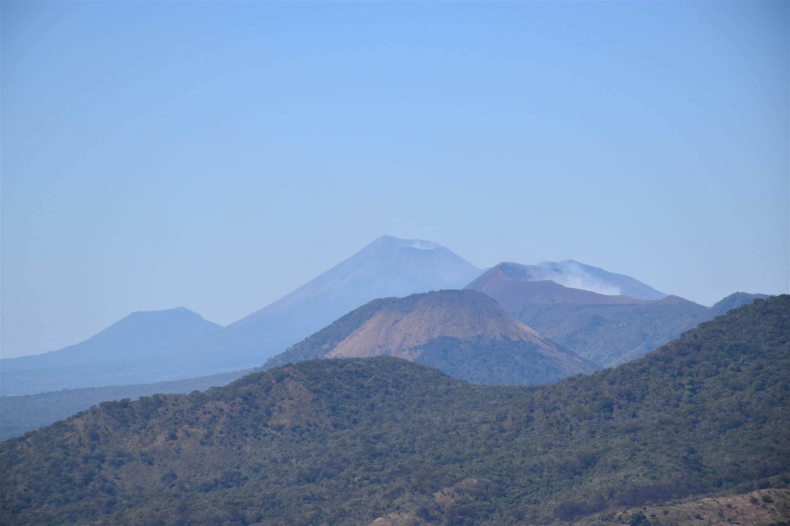

This project documents volcanic activity at three of Nicaragua's most active volcanoes — Telica, Masaya, and Cerro Negro — drawing on field observations, drone imagery, and monitoring data spanning more than three decades. Together they represent the diversity of eruptive styles along the Maribios volcanic chain: persistent lava lake degassing, explosive Vulcanian eruptions, and basaltic cinder cone activity.